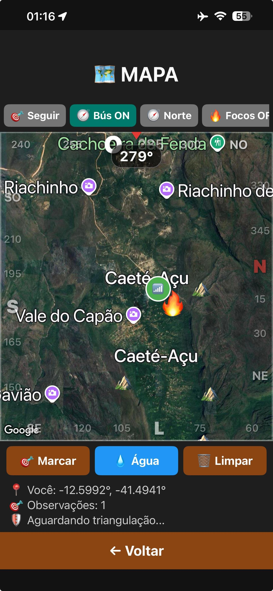
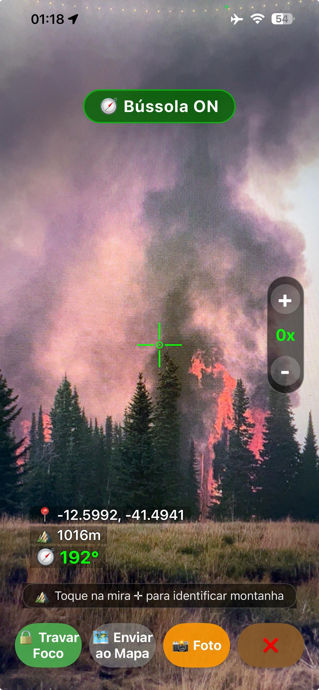
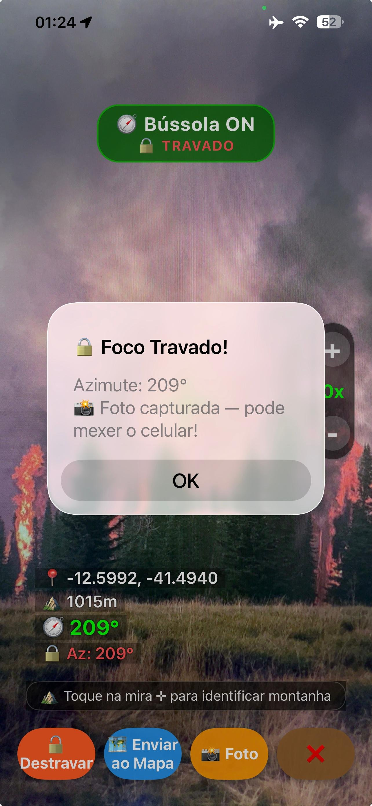
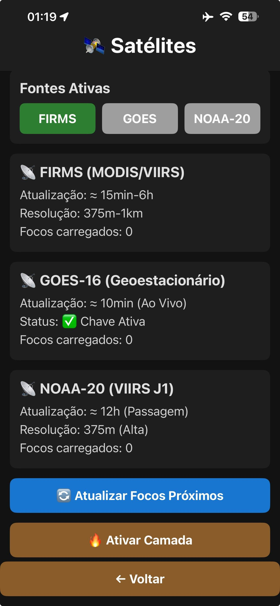
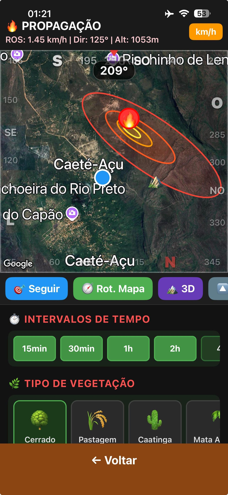
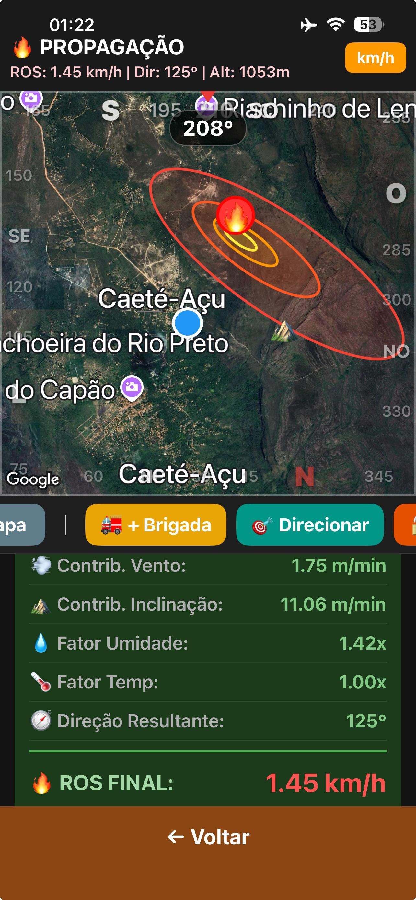
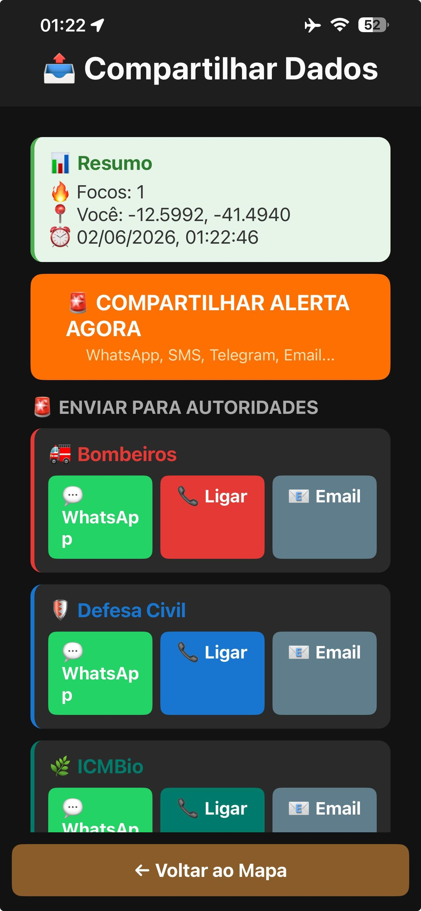

Veja em Ação
O app no campo real
Capturas reais do SmokeDistance em operação na Chapada Diamantina, Bahia.

🗺️ Mapa Tático
📷 Câmera
🔒 Foco Travado
🛰️ Satélites
🔥 Propagação
📊 Dados ROS
📡 Compartilhar 📸 Fototeca
📸 Fototeca